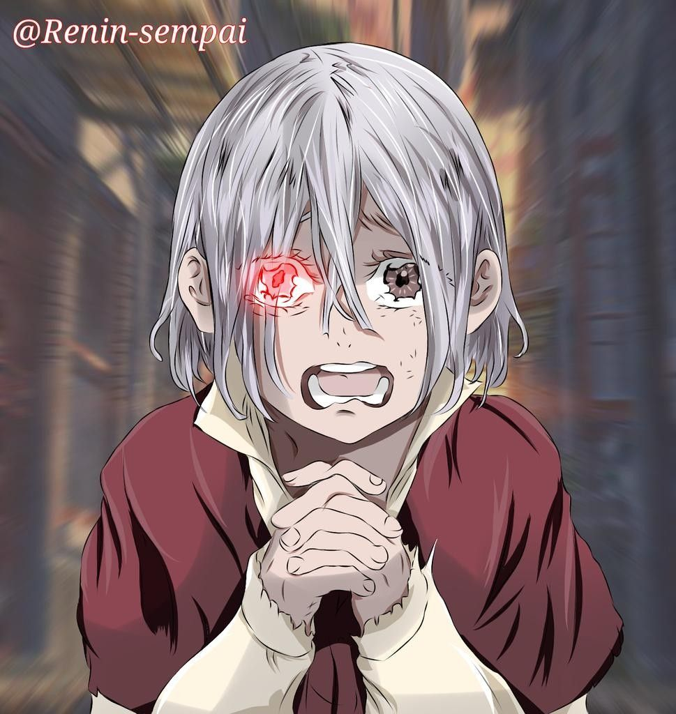

HISTORIA
Nací en el medio del infierno, soy un demonio total Viví en el sufrimiento eterno, para mi es algo normal Y caí, caí tan lento, y nadie hizo nada Perdí mis sentimientos, cuando a quien más amaba Me traicionó Cada vez que vuelvo a casa, la soledad me arrasa ¿A dónde estas? ¿a dónde estas? Porque no solo me abrazas Soy solo un niño perdido Que llora tan confundido ¿A dónde estas? ¿a dónde estas? Porque no me das tu abrigo Aún en el medio del infierno Tuve una pequeña luz Un Sol que apagaba mis inviernos Y que cargaba mi cruz Y fui, y fui creyendo En aquel dulce amor Mi ser se fue envolviendo De todo su calor Más sé que hoy Cada vez que vuelvo a casa, la soledad me arrasa ¿A dónde estas? ¿a dónde estas? Porque no mejor me abrazas Soy solo un niño perdido Que llora tan confundido ¿A dónde estas? ¿a dónde estas? Porque no me das tu abrigo.... Mamá ¿Quién tomara mi mano? ¿De sangre tan manchada? ¿Quién me dirá te amo? ¿Cuándo no tenga nada? Mis... Pecados y el rencor Mezclados con dolor Les ruegan su perdón ¿No tengo corazón? Pues sé que hoy Ya es demasiado tarde Para alguien tan miserable ¿Quién puede amar? ¿Quién puede amar? A un monstruo tan despreciable Acaba al fin conmigo Mi poderoso enemigo ¿Qué es lo que harás? ¿Qué es lo que harás? ¿Perdonaras mi castigo?... Mi Dios
-------------------------------------------------------------------------------------------------------------------------------------------------------------------------- SECCIÓN AUDITIVA: ----------------------------------------------------------------------------------------------------------------------------------------------------------------------------

-------------------------------------------------------------------------------------------------------------------------------------------------------------------------- SECCIÓN AUDIOVISUAL: ----------------------------------------------------------------------------------------------------------------------------------------------------------------------------
---------------------------------------------------------------------------------------------------------------------------------------------------------------------------------------------------------------------
| HABILIDADES |
|---|
| Maestro del sigilo |
| Cuando Jack todavía era un asesino en serie activo en Londres, el se las arregló para poder eludir a la policía y siempre estuvo un paso por delante de estos. Mientras peleaba con Heracles, Jack se las ingenió para poder colocar rápidamente una serie trampas sin ser visto por las cámaras o por su oponente. |
| Estratega experto |
| Jack es capaz de utilizar el entorno urbano a su favor, como se vio cuando huía constantemente para colocar trampas en las que Heracles pudiera caer. También demostró ser maestro del engaño, como cuando hizo pensar a Heracles que su völundr real era un bolso y cuando fingió desmayarse para así poder atacar a Heracles con su última técnica. |
| Reflejos y agilidad sobrehumanos |
| A pesar de que Jack prefiere usar armas y trampas, es bastante hábil en combate cuerpo a cuerpo siendo capaz de esquivar varios de los ataques de Heracles y aún cuando el semidios usó su técnica definitiva para aumentar su poder y velocidad, Jack se las arregló para evitar recibir un golpe directo. |
| Percepción de emociones |
| Jack nació con la habilidad única de ver con su ojo derecho las emociones y sentimientos de otras personas en forma de destellos de color que proyectan sus almas. Al observar el alma de una persona, Jack puede determinar sus verdaderas intenciones al notar como sus colores cambian. Durante su tiempo como asesino en serie en Londres, Jack usó esta habilidad para ver el color del miedo en las personas justo en el momento en que las asesinaba. |
| Destreza en el manejo de armas blancas |
| Jack puede arrojar dagas a sus enemigos con gran precisión y tal como si fuera un pitcher de béisbol tiene la habilidad de hacer lanzamientos con efecto curvo para que la trayectoria de sus cuchillos pueda cambiar, volviéndolos impredecibles y díficiles de bloquear, causando problemas muchos a Heracles. |
¿Quieres saber más?